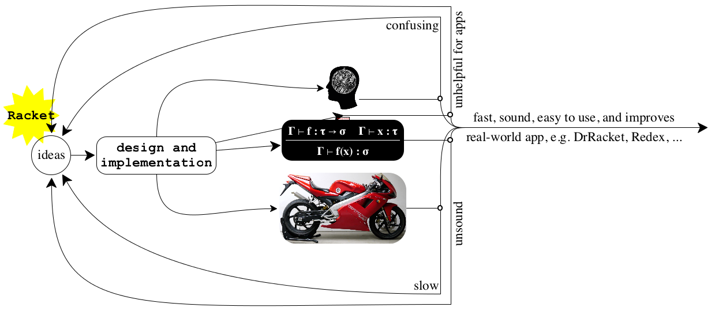

6 The Racket Design Feedback Loop
The design of a language must take place in the context of a feedback loop. Like the feedback loop for many programming languages, Racket’s feedback loop contains soundness theorems (Takikawa et al. 2012), performance evaluations (Takikawa et al. 2015), and usability studies (Marceau et al. 2011). As figure 11 shows, however, the Racket feedback loop also includes a number of software applications. While the preceding sections already indicate the role that DrRacket played for developing, honing, and checking the principles, the creation of large and complex domain-specific languages such as Redex (Felleisen et al. 2010; Matthews et al. 2004), Scribble (Flatt et al. 2009), Slideshow (Findler and Flatt 2006), and others have had an equally significant impact.
b

Redex is probably the most sophisticated client of Racket’s syntax extension system. It employs the latter at two levels: to compile the Redex language of grammar, type, and semantics definitions and as a target for the compilation. As such, Redex has stretched and expanded the syntax extension system.
Scribble is a domain-specific language for creating Racket documentation.
Unlike the documentation system of conventional languages, a Scribble program
can refer to, and compute with, bindings from a Racket library. As a result,
programmers can easily create intensively cross-referencing manuals, language
guides, and books in such a way that each occurrence of an identifier is
automatically linked to its documentation. In fact, a Scribble file is just
a Racket module, so Scribble documents come with all the benefits of other Racket
code—
Finally, Slideshow is both a domain-specific language for programming presentations and a graphical tool for displaying them. For a linguist with an awareness of the language of discourse, designing a language for the programmatic creation of presentations is a natural step. Presenters want a single point of control: they want parametrized re-use of slides, slide elements, and other concepts that are most easily expressed with a language but are difficult to obtain in a WYSIWYG tool. A programmer-as-presenter also has the natural desire to evaluate code within a presentation, possibly even the presentation itself (Flatt et al. 1999). Because of this combination, Slideshow’s construction plays almost the same role in the feedback loop of design as the DrRacket IDE.
In general, all of these applications challenge the linguist in the problem-solving programmer. Each poses several different kinds of problems, best articulated and solved with problem-specific languages. In all cases, the purpose of the languages is to provide a protected and enforced abstraction. Equally important, they all need fine-grained control over resource-management mechanisms that are usually found outside of the language. Their existence and their designs both confirm the Racket principles and illustrate them, so Racketeers frequently consult these applications when they contribute new languages or new concepts to existing languages in the realm of Racket.